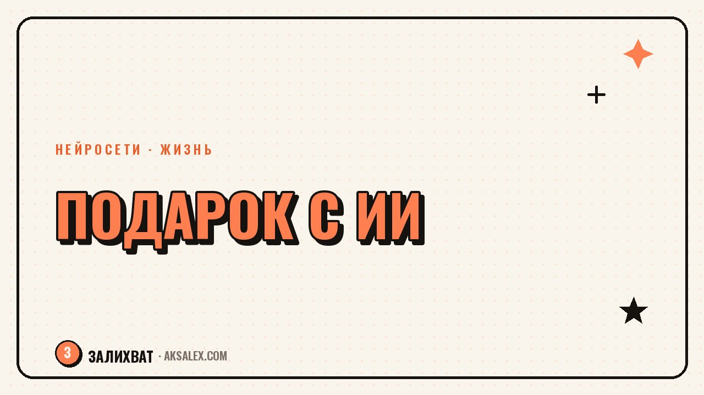

Как выбрать подарок с помощью нейросети: быстро и по бюджету

Стоишь перед витриной или открытой вкладкой маркетплейса и не понимаешь, что подарить - вроде знаешь человека сто лет, а в голове только парфюм и носки. Нейросеть не прочитает мысли именинника, но она отлично умеет сужать огромный список идей до трёх-пяти конкретных вариантов, если задать ей правильные вопросы. Разберём, как выстроить такой диалог, что писать в промпт и где нейросеть точно ошибётся, если довериться ей без проверки.
Почему просить у нейросети «посоветуй подарок» - плохая идея
Если написать в чат с ИИ короткое «посоветуй подарок девушке на день рождения», получишь ровно то, что ожидаешь: парфюм, украшение, набор косметики, книгу «для души». Это не провал нейросети, а результат пустого запроса - она отвечает на уровне вопроса.
Разница в том, сколько деталей ты даёшь на входе. Чем конкретнее описание человека, повода и бюджета, тем точнее и неожиданнее получится список. Нейросеть работает как умный фильтр по огромной базе идей, а не как человек, который лично знает именинника.
Нейросеть не угадывает подарок - она сужает варианты до тех, что соответствуют описанию, которое ты ей дал.
Какие вопросы задать себе перед тем, как писать промпт
Прежде чем открывать чат, выпиши для себя пять-шесть фактов о человеке. Это заменяет долгое выпытывание у нейросети наводящими вопросами и сразу даёт ей материал для работы.
Минимальный набор фактов
- Возраст, пол и чем человек занимается (учёба, работа, декрет, пенсия).
- Хобби или то, что он недавно обсуждал с интересом - даже мимоходом.
- Повод: день рождения, годовщина, или порадовать без причины.
- Бюджет - точная сумма или вилка, без неё список будет из разных ценовых категорий.
- Что уже дарили раньше и что точно не понравилось или не подошло.
Если фактов меньше трёх - напиши нейросети, что знаешь мало, и попроси задать уточняющие вопросы вместо готового списка.
Как выглядит рабочий промпт
Структура простая: кто человек, повод, бюджет, что нужно и что не нужно. Можно писать как обычное сообщение, не обязательно формальным языком.
Пример промпта
- «Нужен подарок маме, 58 лет, увлекается садом и любит читать детективы. Повод - день рождения. Бюджет 3-4 тысячи рублей. Не дари цветы и книги - уже есть идея, нужно что-то другое. Дай 7 вариантов с коротким объяснением, почему подходит».
- После первого ответа уточняй: «первые два не подходят, она это уже видела», «а что-то можно сделать своими руками вместе с ней».
- Попроси сразу разбить варианты по категориям: что купить, что сделать самому, что подарить как впечатление.
Диалог в несколько шагов работает лучше одного идеального промпта - список становится точнее с каждым кругом уточнений.
Где нейросеть ошибается и что проверять самому
Нейросеть не знает актуальных цен, акций и наличия товара в конкретном магазине - эти данные быстро меняются, и она может называть цифры, которые не соответствуют реальности. Любую цену проверяй на маркетплейсе сам.
Она также не знает контекста отношений, которого ты не написал: аллергию на материалы, недавний разрыв, принципы вроде «не носит украшения». Такие детали впиши в запрос, иначе получишь вежливый, но бестактный список.
| Бюджет | Что обычно предлагает нейросеть | Что проверить перед покупкой |
|---|---|---|
| до 1000 рублей | Мелкие аксессуары, сладости, открытки хендмейд | Актуальность цены и наличие на маркетплейсе |
| 1000-5000 рублей | Книги, косметика, тематические наборы по хобби | Совпадает ли хобби с реальным, а не предполагаемым |
| 5000-15000 рублей | Техника, курсы, впечатления (мастер-классы, билеты) | Даты и доступность мероприятия в твоём городе |
| выше 15000 рублей | Крупная техника, украшения, поездки выходного дня | Отзывы и гарантию конкретной модели или тура |
Подарки-впечатления и подарки своими руками через нейросеть
Если хочется не вещь, а эмоцию, нейросеть помогает собрать сценарий впечатления: маршрут прогулки с остановками, список фильмов для тематического вечера, идею квеста по общим воспоминаниям.
Для подарков своими руками она подсказывает формат - как собрать альбом с подписями, какие вопросы включить в анкету «100 фактов о тебе», как написать тёплое письмо без клише. Саму суть - личные воспоминания - придумываешь только ты.
Быстрый план действий
- Выпиши пять фактов о человеке и бюджет.
- Напиши нейросети конкретный промпт с этими деталями и просьбой дать 7 идей с объяснением.
- Уточни список, убрав то, что уже было или не подходит по контексту.
- Проверь цены и наличие вживую, не доверяя цифрам из ответа.
- Если выбрал впечатление или хендмейд - попроси у нейросети структуру, а детали впиши сам.
Частые вопросы
Какую нейросеть лучше использовать для подбора подарков?
Подойдёт любой крупный текстовый ИИ-чат - разницы между ними для этой задачи почти нет. Важнее не выбор сервиса, а то, сколько конкретных деталей о человеке ты дашь в запросе.
Может ли нейросеть точно назвать цену подарка в магазине?
Нет, она не видит актуальных цен и акций конкретных магазинов и может ошибаться. Любую названную цифру нужно проверять на маркетплейсе или в магазине перед покупкой.
Что делать, если нейросеть предлагает только банальные варианты?
Значит, в запросе было слишком мало деталей. Добавь конкретное хобби, последние разговоры с человеком и чётко напиши, что он точно не любит - список сразу станет точнее.
Как подобрать подарок, если человек ничего не хочет и всё есть?
Попроси нейросеть переключиться с вещей на впечатления или заботу - билет на мероприятие, услугу, помощь по дому, совместное время. Такие подарки часто ценят больше вещей, особенно когда материальных потребностей нет.
Стоит ли писать нейросети личную информацию о человеке, которому дарю подарок?
Пиши общие черты - возраст, хобби, повод - без полного имени, адреса и других данных, которые можно привязать к конкретному человеку. Для подбора подарка этого вполне достаточно.
Раз тема оказалась полезной, вот что почитать следующим. Нейросети для ветеринара: карты, памятки хозяевам и переписка без лишних часов на бумажную работу.
Читать статью →а не вручную